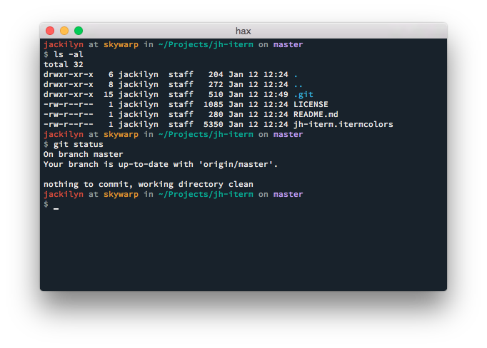

jh-iterm
An iTerm color preset theme.

Usage
- Download this repo.
- Open up iTerm, go to Preferences > Profiles > Colors.
- On the bottom, select Load Presets > Import. Navigate to the downloaded file and open it.
- Do the same for each profile you have.
License
MIT